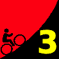

|
| Janet Martinez (SAMONM) hits the line as the first woman the second week in a row. (Josh Hadley, Through the Lens) |
|  |
2009 Low-Key Hillclimbs Week 3 Results: Tunitas Creek-Star Hill-Swett 17 Oct 2009 |
|
|
| Janet Martinez (SAMONM) hits the line as the first woman the second week in a row. (Josh Hadley, Through the Lens) |
A surprising number of hard-core Low-Keyers came out for what turned into an excellent climb, a Low-Key first, Tunitas-Star Hill-Swett Road. Faced with the threat of high traffic from the Half Moon Bay Squash Fest, many rode instead of driving to the start. Thus it was a fit and fast crew which gathered at the wonderful Bike Hut (which supports the Potrero Nuevo Farm) as the morning fog dissipated in the warming air to bless riders with blue skies for the climb.
And what a climb it was! A wide range of grades and road conditions, with some post-storm debris on Tunitas Creek Road, and a particularly muddy sharp right onto Star Hill, but generally excellent pavement from this February's pre-Tour-of-California repaving of what had been famously rough asphalt. After initially gradual slopes, some moderate steepness split things up. Then the grade leveled out a bit, allowing for some regrouping, before the rude introduction to Star Hill Road provided the coup de grace to tired legs. As a result, riders were fairly well spread out by the finish at Skyline Boulevard.
In the men's category, first-year Low-Keyer Ciaran Byrne was the first to the top, improving on his fourth from week 2 and sixth from week 1. Carl Nielson and Mark Edwards were second and third. In the women, Janet Martinez of Sisters and Misters of No Mercy was first for the second consecutive week, finishing ahead of Beverley Cheney (Roaring Mouse) and Mary Ellen Allen (also SAMONM). Bill Bushnell once commanded a monopoly in the hybrid electric division, and was again the first to the summit overall by a wide margin.
In the 5-and-under category, Emma Stahl tandem'ed with her father Geoff to take a strong second overall. Nicely done, Emma!
Scores were generally lower than usual this week due to the strong fields, and in both the men's and women's divisions, many riders who've ridden all three weeks had their score from this week held in reserve. So there wasn't a huge change in the overall standings. a notable exception was volunteer Mei Xi got to double up her score from week 2, moving into the overall lead in the women's ranking. None of the top three in the men's standings were at the climb this week. The notable effect was the number of climbs counting for the overall increased from one to two.
In the team competition, it was again the Sisters and Misters of No Mercy who were top on the day. However, Western Wheelers and LGBRC were able to exploit their high scores from the first two weeks to take the top two places in the rankings.
Thanks to all the volunteers for what was a wonderful climb today!
Thanks to coordinator Barry Burr, with help from Bill Bushnell, Cara Coburn, Dan Connelly, Josh Hadley, Howard Kveck, Winnie Lam, Pete Petroski, Dick Robinson, and Mei Xi for making today's climb possible!median time = 26:54
pl # rider team category time mph fph score 1 6 Bill Bushnell Low-Key Hybrid 26:54 17.00 4854 100.00
median time = 39:45
pl # rider team category time mph fph score 1 28 Ciaran Byrne 33:05 13.82 3946 120.15 2 163 Carl Nielson Sr's & Mr's of No Mercy 45+ 33:15 13.75 3927 119.55 3 101 Mark Edwards Bike Trip 45+ 33:43 13.56 3872 117.89 4 129 Ammon Skidmore Team Roaring Mouse 30+ 33:45 13.55 3868 117.78 5 112 Murray Swanson Pen Velo/Pomodoro 40+ 33:46 13.54 3867 117.72 6 32 Nils Tikkanen Bike Trip 3 33:55 13.48 3849 117.20 7 1 Dan Connelly Low-Key 40+ 34:05 13.41 3831 116.63 8 58 Clark Foy Metrigear 45+ 34:23 13.30 3797 115.61 9 7 James Porter Western Wheelers 3 34:29 13.26 3786 115.27 10 283 Geoff Drake Bike Trip 50+ 34:38 13.20 3770 114.77 11 156 Rich Hill LGBRC 40+ 34:51 13.12 3746 114.06 12 355 Goeric Daeninck 34:58 13.08 3734 113.68 13 93 Thomas Novikoff Webcor/Alto Velo 2 35:08 13.01 3716 113.14 14 18 Tim Clark Metrigear 40+ 35:20 12.94 3695 112.50 15 71 Greg McQuaid San Jose Bike Club 35+ 35:24 12.92 3688 112.29 16 259 Matt Wocasek Bike Trip 3 35:26 12.90 3685 112.18 17 144 Andy Brisnehan Western Wheelers 50+ 35:32 12.87 3674 111.87 18 179 David Nader Pen Velo/Pomodoro 35+ 35:48 12.77 3647 111.03 19 23 Ron Brunner Low-Key Commuter 35:49 12.77 3645 110.98 20 151 Doug Philippone Palantir 35+ 36:09 12.65 3612 109.96 21 315 Tom Gardin 45+ 36:10 12.64 3610 109.91 22 234 Evan Paull Webcor/Alto Velo 25-29 36:18 12.60 3597 109.50 23 187 Tom Rosencrantz Taleo 40+ 36:24 12.56 3587 109.20 24 33 Martin Hyland Western Wheelers 50+ 36:30 12.53 3577 108.90 25 215 Chris Heisterkamp 30+ 36:39 12.47 3562 108.46 26 44 Michael Chasse Bike Dads 45+ 36:44 12.45 3554 108.21 27 98 Bruce Gardner Sr's & Mr's of No Mercy 35+ 37:01 12.35 3527 107.38 28 226 Brian Edwards Rocky Mounts/Pearl Izumi 30+ 37:09 12.31 3514 107.00 29 97 Wajtek Poppe Out Of Shape Dad 37:17 12.26 3502 106.62 30 244 Michael Barnes 37:24 12.22 3491 106.28 31 291 Tim Sawyer Bike Trip 45+ 37:51 12.08 3449 105.02 32 197 Ryan Gibson Google 38:07 11.99 3425 104.29 33 223 Barrett Ausman Webcor/Alto Velo 4 38:14 11.96 3415 103.97 34 276 Adam Brinkman 25-29 38:15 11.95 3413 103.92 35 157 Joe Fabris Plus 3 50+ 38:26 11.90 3397 103.43 36 45 Sean Broeder Silicon Valley Triathlon 45+ 38:42 11.81 3374 102.71 37 205 Patrick Kenny 35+ 38:43 11.81 3372 102.67 38 115 Martin Hampton Pen Velo/Pomodoro 45+ 38:49 11.78 3364 102.40 39 175 David Parrish Team Roaring Mouse 35+ 38:55 11.75 3355 102.14 40 59 Scott Martin Bike Trip 50+ 39:08 11.68 3336 101.58 41 43 Joseph Sullivan 35+ 39:09 11.68 3335 101.53 42 212 Joe Karbowski 39:18 11.63 3322 101.15 43 109 Shance Ordell Western Wheelers 35+ 39:22 11.61 3317 100.97 44 287 Stewart Thompson Pen Velo/Pomodoro 5 39:27 11.59 3310 100.76 45 96 Phil Dubach Western Wheelers 35+ 39:36 11.55 3297 100.38 46 230 Pete Dunten SLACer 45+ 39:45 11.50 3285 100.00 47 180 Dan Brehmer SLACer 40+ 39:54 11.46 3272 99.62 48 323 Bart Johnson SLACer 40+ 40:07 11.40 3255 99.09 49 136 Fred Egley Dos Egley's 45+ 40:15 11.36 3244 98.76 50 26 Ben Stern Team Roaring Mouse 30+/Fixed 40:26 11.31 3229 98.31 51 56 David Vrane SLACer 45+ 40:33 11.27 3220 98.03 52 161 Mike Salameh 55+ 41:00 11.15 3184 96.95 53 79 Gino Cetani Western Wheelers 35+ 41:02 11.14 3182 96.87 54 132 George Junour Santa Cruz 41:31 11.01 3145 95.74 55 269 Jeff Shute Google 30+ 41:44 10.96 3128 95.25 56 284 Ilyas Elkin 25-29 41:49 10.93 3122 95.06 57 347 Matt Beadon 30+ 42:06 10.86 3101 94.42 58 268 Vince Valvano 42:07 10.86 3100 94.38 59 221 Ben Stever Bike Dads 20-24 42:12 10.83 3094 94.19 60 140 Gary Shockey 35+ 42:16 10.82 3089 94.05 61 87 Chuck Spiteri Pen Velo/Pomodoro 50+ 42:28 10.77 3074 93.60 62 29 Thomas Rabedeau SLACer 50+ 42:35 10.74 3066 93.35 63 73 Vince Cummings 42:38 10.72 3062 93.24 64 332 Jens Weber Doogie 30+ 42:40 10.72 3060 93.16 65 324 Paul Melville Doogie 55+ 42:43 10.70 3056 93.06 66 222 Chris Swenson 5 42:49 10.68 3049 92.84 67 111 Gary Griffin Bike Trip 55+ 43:31 10.51 3000 91.34 68 217 Gilad Wolff 30+ 43:41 10.47 2989 91.00 69 75 Dan Cervelli Palantir 43:51 10.43 2977 90.65 70 195 Justin Eichenlaub Post Car Press.org 25-29 43:56 10.41 2972 90.48 71 331 Daniel Harrington SLACer 40+ 43:59 10.39 2968 90.38 72 69 Nic Brummell Atlas 45+ 44:04 10.38 2963 90.20 73 122 Mark Powers Pen Velo/Pomodoro 50+ 44:07 10.36 2959 90.10 74 64 Han Wen 40+ 44:27 10.29 2937 89.43 75 35 Stephen Fong San Jose Bike Club 40+ 44:37 10.25 2926 89.09 76 363 James Dudley 47:00 9.73 2778 84.57 77 38 Thomas Preisler LGBRC 50+ 47:28 9.63 2751 83.74 78 152 Kevin Eck x-team 40+ 47:50 9.56 2729 83.10 79 251 Christopher Olson Google 5 48:07 9.50 2713 82.61 80 107 Richard Allen Sr's & Mr's of No Mercy 60+ 48:18 9.47 2703 82.30 81 142 Jeff Swan Spike the Wonder Dog 40+ 48:29 9.43 2693 81.99 82 125 Jerrick McCullough 40+ 48:42 9.39 2681 81.62 83 51 Richard Contreras 50+ 48:57 9.34 2667 81.21 84 116 Kenneth Fong Team Rwanda 45+ 49:28 9.24 2639 80.36 85 117 Bob Corman Spike the Wonder Dog 50+ 49:53 9.17 2617 79.69 86 82 Mike Jessen LGBRC 50+ 51:01 8.96 2559 77.92 87 371 Jeroem Meiier 35+ 51:27 8.89 2538 77.26 88 126 John Conklin 40+ 53:14 8.59 2453 74.67 89 148 Keith White Spike the Wonder Dog 35+ 56:44 8.06 2301 70.06 90 135 Swaminatha Vasudevan 40+ 63:57 7.15 2042 62.16 91 11 Doug Simpkinson Webcor/Alto Velo 35+ 64:04 7.14 2038 62.04 92 164 Geoff Stahl Tandem 102:27 4.46 1274 38.80T T : tandem score
median time = 51:50
pl # rider team category time mph fph score 1 102 Janet Martinez Sr's & Mr's of No Mercy 40+ 40:03 11.42 3260 129.42 2 134 Beverly Chaney Team Roaring Mouse Ladies 42:26 10.77 3077 122.15 3 77 Mary Ellen Allen Sr's & Mr's of No Mercy 55+ 44:39 10.24 2924 116.09 4 34 Margie Medrano Bike Trip 50+ 47:14 9.68 2764 109.74 5 108 Lindsey Chirdon Western Wheelers 20-24 48:57 9.34 2667 105.89 6 207 Alissa Maglaty Early Bird Women 20-24 50:20 9.08 2594 102.98 7 60 Lori Fabris Sr's & Mr's of No Mercy 50+ 51:33 8.87 2533 100.55 8 245 Laura Egley Dos Egley's 45+ 51:50 8.82 2519 100.00 9 186 Kelly Gregory Post Car Press.org 25-29 51:56 8.80 2514 99.81 10 128 Claudia Schwarz Spike the Wonder Dog 25-29 53:05 8.61 2460 97.65 11 61 Lisa Emmerich Team Rwanda 45+ 57:48 7.91 2259 89.68 12 149 Ingrid McCarty Western Wheelers 50+ 58:16 7.85 2241 88.96 13 4 Pat Parseghian Google 50+ 61:04 7.49 2138 84.88 14 118 Christine Holmes Low-Key 40+ 67:08 6.81 1945 77.21 15 209 Christina Vaughn Google 50+ 69:04 6.62 1890 75.05 16 177 Emma Stahl Tandem/5 And Under 102:27 4.46 1274 38.80T T : tandem score
pl team score scoring 1 Sr's & Mr's of No Mercy 365.06 (Janet Martinez, Carl Nielson, Mary Ellen Allen) 2 Bike Trip 349.87 (Mark Edwards, Nils Tikkanen, Geoff Drake) 3 Team Roaring Mouse 342.07 (Beverly Chaney, Ammon Skidmore, David Parrish) 4 Western Wheelers 336.04 (James Porter, Andy Brisnehan, Martin Hyland) 5 Pen Velo/Pomodoro 331.16 (Murray Swanson, David Nader, Martin Hampton) 6 Low-Key 327.61 (Dan Connelly, Ron Brunner, Bill Bushnell) 7 Webcor/Alto Velo 326.61 (Thomas Novikoff, Evan Paull, Barrett Ausman) 8 SLACer 298.71 (Pete Dunten, Dan Brehmer, Bart Johnson) 9 Google 284.41 (Ryan Gibson, Jeff Shute, Pat Parseghian) 10 LGBRC 275.72 (Rich Hill, Thomas Preisler, Mike Jessen) 11 Spike the Wonder Dog 259.32 (Claudia Schwarz, Jeff Swan, Bob Corman) 12 Metrigear 228.11 (Clark Foy, Tim Clark) 13 Bike Dads 202.41 (Michael Chasse, Ben Stever) 14 San Jose Bike Club 201.38 (Greg McQuaid, Stephen Fong) 15 Palantir 200.61 (Doug Philippone, Dan Cervelli) 16 Dos Egley's 198.76 (Laura Egley, Fred Egley) 17 Post Car Press.org 190.29 (Kelly Gregory, Justin Eichenlaub) 18 Doogie 186.22 (Jens Weber, Paul Melville) 19 Team Rwanda 170.03 (Lisa Emmerich, Kenneth Fong) 20 Taleo 109.20 (Tom Rosencrantz) 21 Rocky Mounts/Pearl Izumi 107.00 (Brian Edwards) 22 Plus 3 103.43 (Joe Fabris) 23 Early Bird Women 102.98 (Alissa Maglaty) 24 Silicon Valley Triathlon 102.71 (Sean Broeder) 25 Santa Cruz 95.74 (George Junour) 26 Atlas 90.20 (Nic Brummell) 27 x-team 83.10 (Kevin Eck)